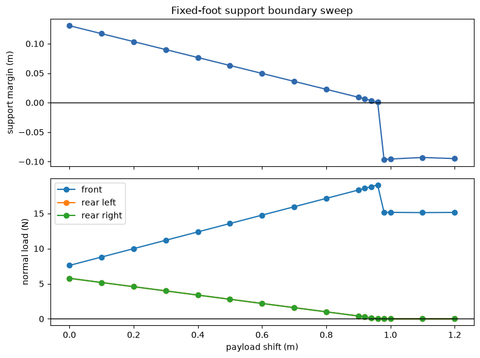

#01
experiment record
Feedback fundamentals
What does closing the loop change in a one-joint pendulum?
P-only feedback overshot or oscillated more; adding velocity feedback made the response settle more cleanly.
robotics test bench / experiments
i work through control, geometry, and contact in small simulations, then use what i learn in a six-legged robot. these are the experiments behind that work.
start with a notebook / 05
a fixed-foot sweep connects the support margin to the load at each contact. the notebook keeps the condition table, plotted outputs, and interpretation together.
read the evidence notebook ↗experiment and context →
experiment record
What does closing the loop change in a one-joint pendulum?
P-only feedback overshot or oscillated more; adding velocity feedback made the response settle more cleanly.
experiment record
What happens at one joint when only the other joint is driven?
A passive elbow moved with zero elbow command, replacing an independent-joint model with a full-mechanism view.
experiment record
What does dynamics knowledge buy, and what happens when it is wrong?
Accurate feedforward nearly removed the tracking residual. A controller-only mass error returned a structured feedback burden.
experiment record
Why can the same joint command move a foot differently?
The pose-dependent Jacobian mapped joint velocity into task-space velocity; its transpose made the force-to-joint-torque mapping concrete.
notebook + experiment
What makes a tripod pose statically supported?
A configuration stop separated valid evidence from a broken ballast sweep. A later fixed-foot notebook bracketed the boundary between a nearly zero margin and rear-contact unloading.
notebook + experiment
Can the current C-1N leg reach an outward-and-down support point?
The two-joint leg missed the target by 6.7 cm. A small experimental proximal-axis probe moved the foot outward and cut that distance to 3.28 cm.